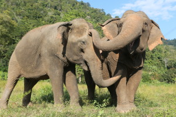

Elephant
Asian elephants have been domesticated by humans, and are used as beasts of burden or as transportation. They have also been used in wars.
- A long trunk or proboscis: used for breathing, lifting water, and grasping objects
- Incisors grow into tusks: serve as weapons and as tools for moving objects and digging
- Large ear flaps: help to control their body temperature
- Pillar-like legs: can carry their great weight
Elephants are the largest land mammals on Earth. Two species of elephant, the Asian elephant and African elephant, remain extant. Elephants are herbivores and prefer habitats that give them access to food and water. Both species consume as many as 300 pounds of food per day. Despite obvious similarities, there are key physical differences between Asian and African elephants that distinguish them from each other.